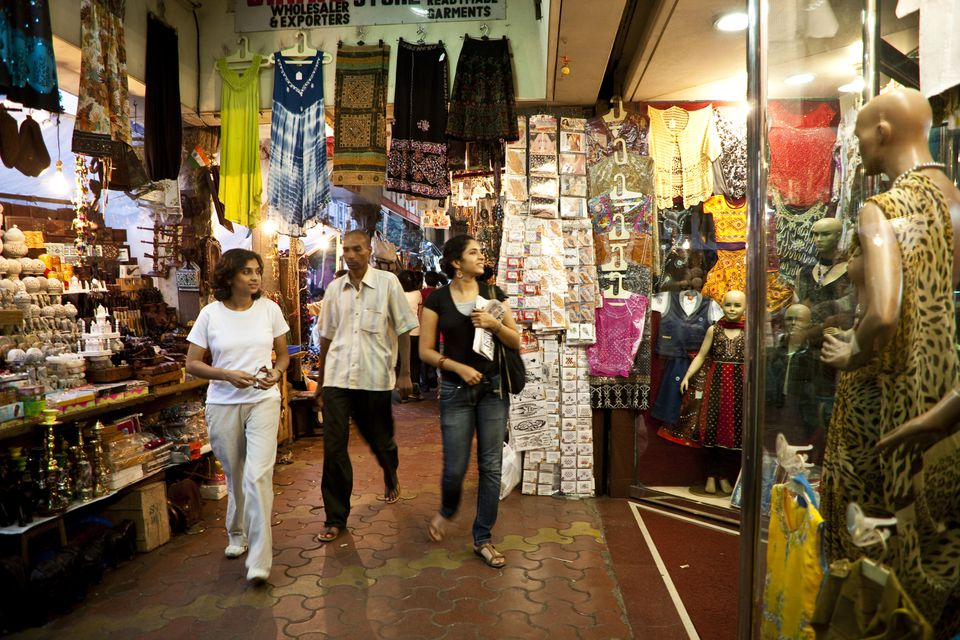
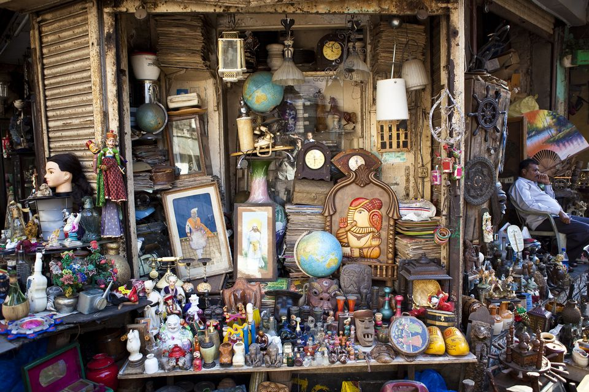
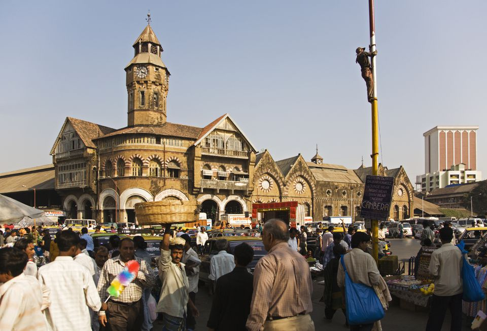
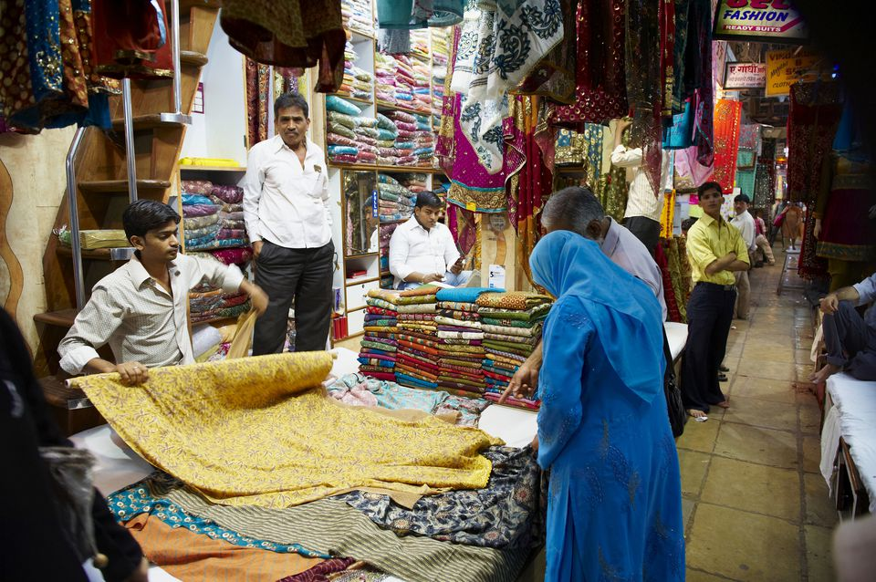
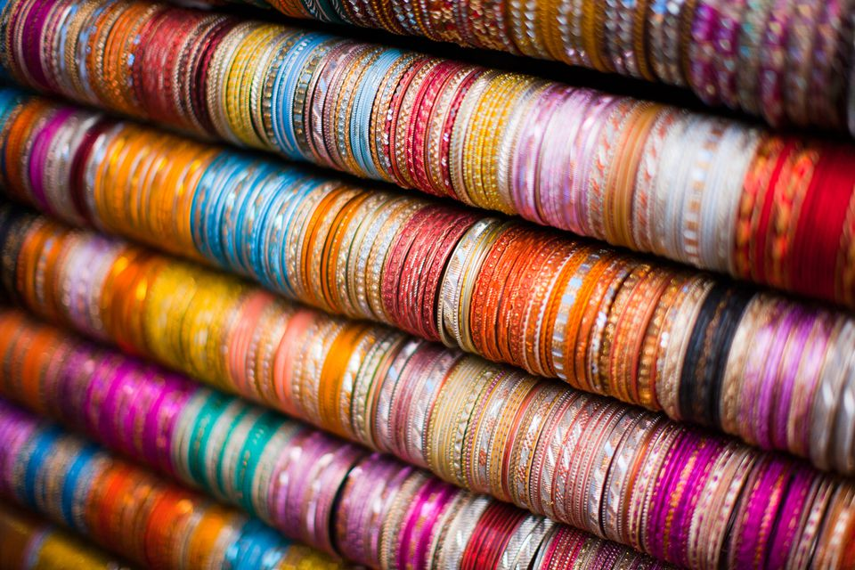
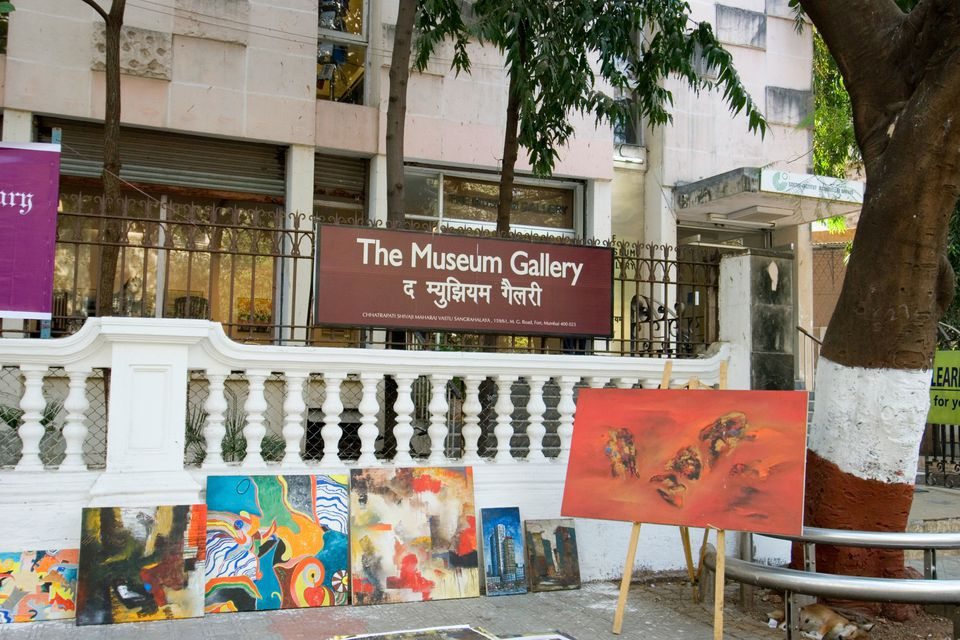
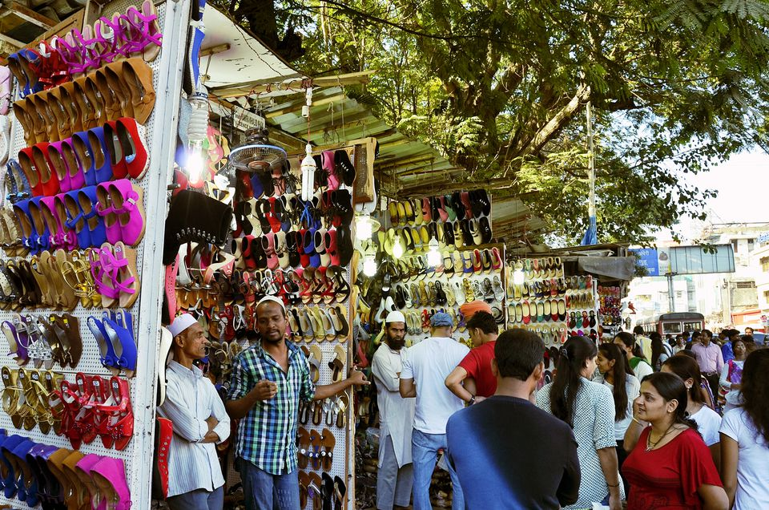
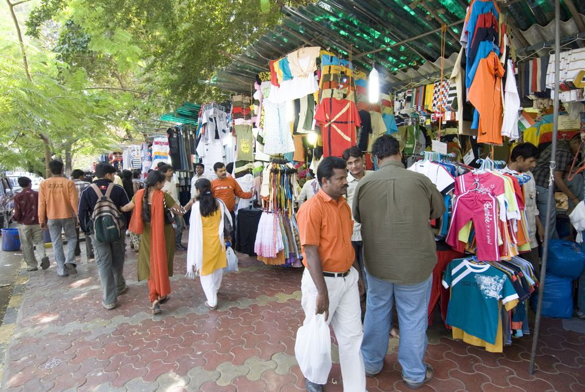

The everyday carnival that is the Colaba Causeway market is a shopping experience like no other in Mumbai. Geared especially towards tourists, that infamous Indian saying of "sab kuch milega" (you'll get everything) certainly applies at this market. Dodge persistent balloon and map sellers, as you meander along the sidewalk and peruse the stalls. Want your name written on a grain of rice? That's possible too. If you need a break from shopping, pop into Leopold's Cafe or Cafe Mondegar, two well known Mumbai hangouts.
Location: Colaba Causeway, south Mumbai. Opening Hours: Daily from morning until night. What to Buy: Handicrafts, books, jewelry, crystals, brass items, incense, clothes.
Navigate your way through crowded streets and crumbling buildings, and you'll find Chor Bazaar, nestled in the heart of Mumbai's Muslim district. This fascinating market has a history spanning more than 150 years. Its name means "thieves market", but this was derived from the British mispronunciation of the its original name of Shor Bazaar, "noisy market". Eventually stolen goods started finding their way into the market, resulting in it living up to its new name!
Location: Mutton Street, between S V Patel and Moulana Shaukat Ali Roads, near Mohammad Ali Road in south Mumbai. Opening Hours: Daily 11 a.m. until 7.30 p.m., except Friday. The Juma Market is held there on Fridays. What to Buy: Antiques, bronze items, vintage items, trash & treasure.
If you want to see how the locals shop, head to Crawford Market. This old-style market, housed in an historic colonial building, specializes in wholesale fruit and vegetables. It's also got an entire section devoted to pets of all shapes, sizes, and breeds.
Location: Lokmanya Tilak Marg, Dhobi Talao, Fort area, south Mumbai. It's near Chhatrapati Shivaji Terminus (Victoria Terminus) railway station. This market area is hectic and overwhelming, and it's easy to get lost. Hence, it's a good idea to explore it on a guided tour. Opening Hours: Daily from morning until night, except Sunday. Open mornings only on Sundays. What to Buy: Fruit, vegetables, spices, food, flowers, birds, fish, and other pets.
If you're looking to buy cloth by the meter or un-stitched dress material to make Indian outfits, Mangaldas Market and Mulji Jetha Market (also known as M.J. Market) are where you should head. Located close to each other opposite Crawford Market, these sprawling wholesale markets are among the largest textile markets in Asia. You'll find rows and rows of stalls filled to the brim with a diverse assortment of fabrics, from bling to block prints!
Location: Near Zaveri Bazaar, Kalbadevi, south Mumbai. (If you're interested in gold, Zaveri Bazaar is popular gold market). Walk through the lane leading to Jama Masjid. Also in this area is the iconic Mumbadevi temple, which the city was named after. Opening Hours: Daily from morning until night, except Sundays. What to Buy: Cloth.
A bit further north of Crawford Market and Mangaldas Market, the area known as C.P. Tank (Cawasji Patel Tank) is famous for its exquisite bangles. Try TipTop Point for something special. If you want bangles to go with a sari or other outfit, be sure to bring it with you so the seller can match the colors perfectly.
Location: Bhuleshwar Road, Bhuleshwar, south Mumbai. It can be reached by heading north of Mulji Jetha Market and Mumbadevi temple. You may also wish to visit Bombay Panjrapole cow shelter, which is tucked away in this area. Opening Hours: Daily from morning until night, except Sundays. What to Buy: Bangles and jewelry.
The leafy pavement on either side of the Jehangir Art Gallery in Mumbai's Kala Ghoda (Black Horse) Arts Precinct is lined with the artwork of promising young artists, who gather there to exhibit and sell their works. The great thing about the Kala Ghoda pavement gallery is that you can interact with the artists to find out about their techniques, and even see them in action.
Location: MG Road, Fort, south Mumbai. Opening Hours: Daily from around 11 a.m. until 7 p.m. What to Buy: Everything from portraits to religious paintings.
A fusion of modern and traditional, and East meets West, in one of Mumbai's hippest suburbs. Here streets stalls contrast with brand name shops, and you'll find an Indian roadside food vendor on one side of the road and a Kentucky Fried Chicken outlet on the other. The street stalls tend to be grouped together according to the type of goods they sell. If you visit this market on a Sunday, be prepared for the crowds!
Location: Linking Road, Bandra West (starts from Waterfield Road intersection). Opening Hours: Daily from 10 a.m. until 10 p.m. What to Buy: Indian traditional clothes, children's clothes, shoes, bags, belts.
Fashion Street is literally just that -- a street lined with fashion! There are around 150 stalls there. The market mainly attracts teenagers and college students, who come to grab the latest western clothes and fake brand names at cheap prices.
Location: MG Road, south Mumbai. Near Metro Cinema and Victoria Terminus railway station (opposite Azad Maidan). Opening Hours: Daily from morning until night. What to Buy: Clothes, shoes, belts.
